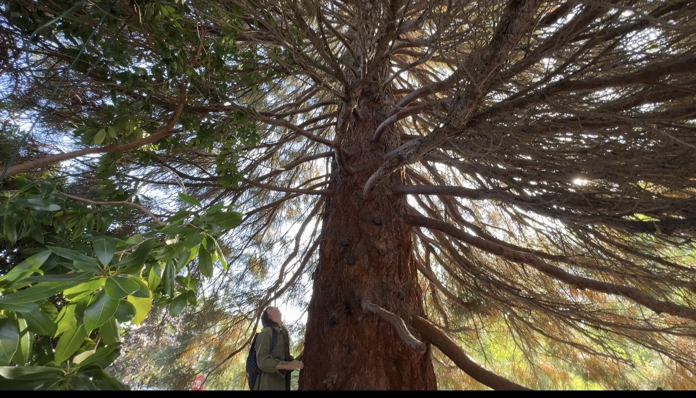

Messages from the Trees
Meet KELA.
KELA is the name the trees gave Patti for their collective voice, many trees speaking together across the Earth and beyond.
In 2024, Patti’s ability to receive and communicate messages with trees came into focus. In one of the moments that became central to her story, KELA asked Patti, “Why haven’t you asked the trees to protect your mind and energy yet?”
The trees describe themselves as the sling that can help take down the Goliath of humanity’s repetitive thoughts that no longer serve us. KELA has shown Patti unkind thoughts as bugs gathering around the mind and energy field, taking up the space where peace, ideas, and possibility want to live.
One day, as Patti walked into her apartment surrounded by trees, they asked her to call their collective voice KELA. The name came before the research.
In Patti’s spiritual practice, the trees work with the plant and animal kingdoms to offer mechanisms for psychic protection, help ease the mind and energy, and make room for kinder thoughts and new creation to surface.
The word in Hebrew
A sling. A fabric. A grove.
Patti sat with what that name was holding. She found the Hebrew word קֶלַע qela.
If you grew up in church, you know this as David and Goliath: little guy, giant, slingshot. Churches often call that book First Samuel. In Hebrew the first half is Shmuel Aleph. Chapter 17. Same story. The last telling most of us ever got.
Qela is the sling in his hand. Not a toy slingshot. Leather, cords, one stone. The same word is also the cloth hangings of a holy courtyard: fabric stretched to make a sacred space. Many threads, one shelter.
The valley is named for a tree. The giant’s spear is עֵץ etz — wood — like a weaver’s beam: the thick wooden bar on a loom, the thing cloth hangs from. A tree turned into weight.
English kept the fight. It dropped the grove. It dropped the hanging. It dropped this line:
David was stronger than the Philistine with the qela and with the stone. And a sword is not in David’s hand.
Shmuel Aleph · 1 Samuel 17:50
That is KELA. Not a bigger giant. The grove as sling and as cloth: many voices braided around the mind, one clear stone, no sword. The Goliath is the thought that will not leave the gap. Protection is not more armor. It is asking the trees to hold the field.
These are Patti’s spiritual impressions, offered beside the scripture for personal contemplation, not as a claim that the old writers built this work, and not as a promise of a guaranteed outcome.